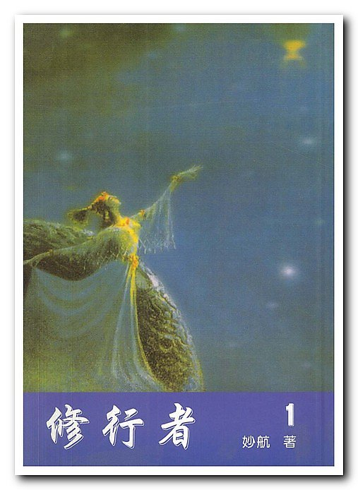

三，大勢至菩萨.......夢中回
西洋女王，西姆唱的小令〈夢中回〉，金髮飄飄，然而卻精通漢文、漢曲。
我今白髮三千丈！
不須上天細思量。
你今抱嬌夢中回，
晶瑩玉白當中黑，
細思量，夢中回，
白髮黑衣正堪回，
明月故國中。
我尋你、等你、已許多許多年。白髮三千丈，是形容歲月的漫長。你不必非要等到回歸，你現在不妨好好想想。
如今，你要帶著你那群嬌娘，暗指羅刹女回歸了，夢中回，是指回歸。“晶瑩玉白當中黑”，是指宙心，是說回歸"宙心"。
"般若波羅密多"是大神咒,是大明咒......
摩訶正確解應為"大"。何為大?“宇”為大。故摩訶表示宇宙的宇字。宇又稱為空間,在神學中則稱之為虛空。摩訶引伸又為大虛無,如摩訶大法即是大虛無法。
“修行者"第十篇有一首大威大勢至菩薩的詞令:摩訶我本大!意為在宇中我是威力最大的女神,故,天地稱我為大勢。西洋地人稱我為戰神。

般若為大智慧。但大勢至菩薩曰:般若元是說。此又何解?
這裡的說字,並不是說話的說。此說是放射的意思,是"射"的意思。是指宙心大日向遍及宇的虛空中大放光茫的意思。
用大智慧解般若並不貼切,故,大勢至予以糾正,般若為說。表宙心大日慧光四射,大光明遍及宇空。故這個大智慧必須如此之大,方可稱般若。
波羅為從此岸渡到彼岸的"過河行為"。
密多是指宙心大日。聚則為“密”,散則為“多”。聚為“一”,散為“九”,“合”之為“零”。聚為密為一為太極。散為多為九為萬物萬類萬法萬種。合為零,為無極。
無極生太極,太極生兩儀。此兩儀一個儀是一,一個儀是九。
這裡又有各種解法,其中一解是,此一是玄龍表“陽”;此九為九宮表“陰”。但兩儀中一,與密不是同一個一。密是佛王大日如來,多是九宮。兩儀中的一是玄龍,一是九宮。若兩儀和合,則可為密為大日如來。若九宮抓不回玄龍,則不成密,不成大日如來.
是故,大勢至菩薩對玄龍說:我今白髮三千丈,不須上天細思量...
是說,我為渡你,費盡心思,為你已成白髮三千丈!我也不要你上天回歸,你在下面好好想想,打來打去不就是為了渡你們這些冤孽。
又說:你今抱嬌夢中回,晶瑩玉白當中黑。
是說,你終於明白了,想帶著你的眾大羅剎女回歸大日宮了。
"晶瑩玉白當中黑"是指兩儀,這裡是指回歸九天。
好好想一想，還是回來吧。現在正是你回歸的時機，我們在宙心故國見！
朝打三千，暮打八百，正是西洋女王行渡的方法，直把你打得大死一回。看你無明是否還敢發作。又如何令無明少發作呢？唯有一法， 即瑜伽。為何瑜伽可使無明少發作？
學者可否對“瑜伽”二字有更深刻的理解？何為瑜伽？即是“常相應” 。何為常相應？即是常相憶、常相思、常相守，常倚大門外。
女王詞令接下講：
白發黑衣正堪回，明月故國中。
白發黑衣，是講把能量全部集中在眉心，黑衣是指人身，是 指已經 把全部能量集中至眉心時的人身。是指準備遺棄的人身。
明月故國中。是說我西洋女王，在故國明月裏等著接應你。暗含著 另一個意思，是對羅地干布暗示，咱們在老地方先見個面，把事情 攤開扯平，舊賬說清，回去以後，你也別吵了，我也別鬧了。此即 不須上天細思量！
| 上 一 頁 | 下 一 頁 | 回 主 頁 |
Email: miduoyuan@126.com